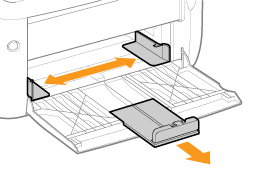
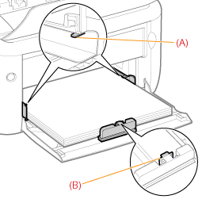

|
Nähere Informationen zu dem Papier, das in das Mehrzweck-Papierfach eingelegt werden kann, finden Sie im Abschnitt "Verwendbares Papier".
|
|
Lesen Sie vor dem Einlegen von Papier den Abschnitt "Achtung (Einlegen von Papier)".
|
1
Öffnen Sie das Mehrzweck-Papierfach.

2
Stellen Sie die Papierführungen etwas breiter und länger ein als das tatsächliche Papierformat ist.

3
Legen Sie das Papier mit der zu bedruckenden Seite nach oben vorsichtig ein, bis es die Rückseite des Fachs berührt.
Legen Sie das Papier unbedingt in Hochformat ein.

|
WICHTIG
|
|
Einlegen von Briefumschlägen
Lesen Sie den Abschnitt "Drucken auf Briefumschlägen", und legen Sie das Papier in der korrekten Ausrichtung ein.
|
|
HINWEIS
|
|
Wenn Sie Papier mit Briefkopf oder Logo einlegen
Lesen Sie den Abschnitt "Ausrichtung des Papiers beim Einlegen", und legen Sie das Papier in der korrekten Ausrichtung ein.
|
4
Richten Sie die Papierführungen am eingelegten Papier aus.

|
WICHTIG
|
|
Achten Sie darauf, dass die Papierführungen am Papier ausgerichtet sind.
Wenn die Papierführungen zu locker oder zu eng sind, kann es zu einem fehlerhaften Einzug oder zu einem Papierstau kommen.
 |
5
Achten Sie darauf, dass der Papierstapel unter die Papiergrenzführungen (A) oder den Haken (B) an der Papierführung gelegt wird.

|
Nähere Informationen zum allgemeinen Druckverfahren finden Sie im Abschnitt "Allgemeines Druckverfahren".
|
 (Papieranzeige) (Orange). Der Druckvorgang wird durch Drücken der Taste [
(Papieranzeige) (Orange). Der Druckvorgang wird durch Drücken der Taste [  ] (Papiertaste) wieder aufgenommen.
] (Papiertaste) wieder aufgenommen.